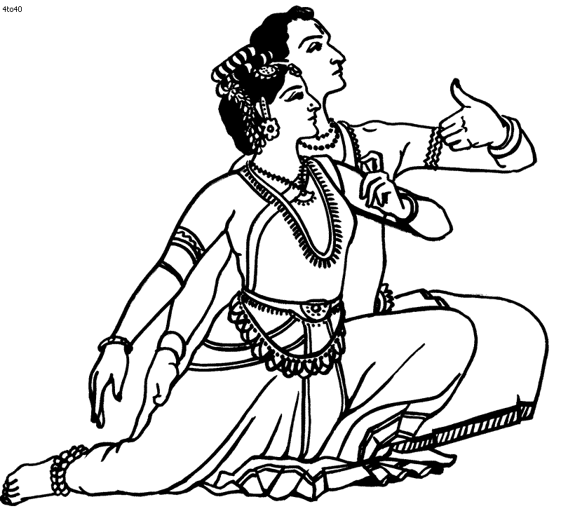

CLASSES
Maya dance academy provides a wide range of dance classes in Tinley Park, IL. Weather you want
to learn dance seriously, keep your body fit or just need fun - we have perfect classes to
satisfy your need!!
Interested taking classes with Maya Dance Academy. Choose your option below:
On-line Classes

In-person Classes